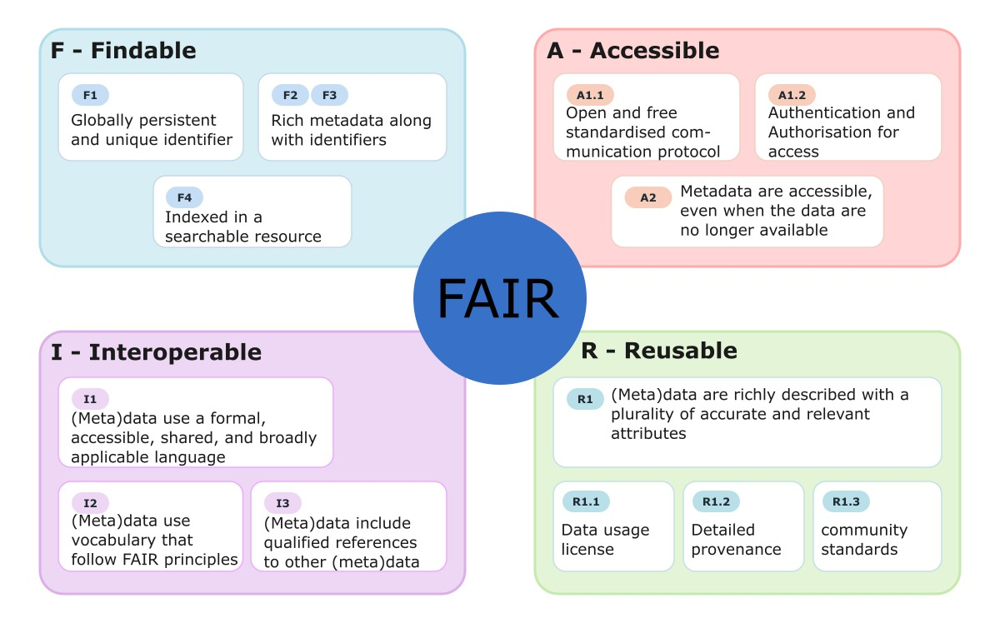

As Large Language Models and AI agents are increasingly integrated into scientific research pipelines for data retrieval, interpretation and analysis, the need for findable, accessible, interoperable and reusable (FAIR [1]) data, built on community-driven standardisation efforts, has never been greater. Only such data can ensure the correctness, quality and integrity of research.
Introduction
In this blog post, I will focus on the work done by the FAIRmat consortium, in particular on the pynxtools package [2], to which I have contributed and with which I have worked as part of my PhD research on quantitative X-ray photoelectron spectroscopy (XPS). Nowadays, a complete raw dataset supporting the claims and conclusions of a publication is increasingly expected and, in some cases, mandated by funders and journals. I would go as far as saying that research data are at least as important as the published article itself. But data is not just data. It may be unusable and not machine-readable because of its structure, because of local standards that researchers use without any clear logic, or, in some cases, because of an unwillingness to share a complete set of raw data. When performing an experiment or a simulation, researchers typically report their data in a variety of formats, ranging from simple text files to more complex hierarchical or structured formats. In experimental research it is also common to record information as handwritten notes in a lab notebook. To share data in a useful way, researchers must provide all of this contextual information in a meaningful, comprehensive and standardised form. This contextual information is called metadata. The more comprehensive the metadata, the easier it is to understand the reported data. For example, when reporting an XPS measurement and its analysis, I need to describe the complete experimental setup, including the source, the detector and the sample position, as well as the sample parameters, including its preparation history. For the quantitative analysis, it is necessary to specify the individual fitted peak shapes, the model used for background subtraction and the sources of reference values. Without this information, reproducing an experiment or calculation can become very resource-demanding. And what good is research if it merely feeds the reproducibility crisis [3]?
The FAIR principles
Community-driven standardisation efforts following a bottom-up approach are exactly what science needs to make data FAIR. This is the mission of the FAIRmat consortium [4]: (i) to develop and maintain a data infrastructure following the FAIR principles for materials science, by providing tools and standards in support of scientific exchange, and (ii) to support the scientific community by defining research data management practices based on the FAIR principles. In the following, I will explore what it means to make data FAIR and how this prepares data for use by AI ("AI-ready"), and I will introduce best practices for researchers in the materials science community, from both a computational and an experimental perspective. The key pillars of FAIR are illustrated in Figure 1 and stand for the following:
- Findable: Data and metadata should be linked to a globally unique and persistent identifier such as a digital object identifier (DOI), which is nowadays used to identify publications and datasets in repositories (e.g., Zenodo, TU Wien Research Data, NOMAD). A DOI allows other researchers not only to find your data even if its location changes, but also to reference it in their publications. Metadata and research data are typically two separate types of information, so it is also crucial to structure repositories in a way that the metadata carries a unique identifier linking it back to the corresponding dataset. Once such identifiers exist, researchers also need to be able to search for the data within the repository or through search engines that index the repository content. Rich metadata describing your data also makes it easier for others to find. Equally important as sharing your data is the license under which it is distributed. The topic of licensing deserves a separate blog entry [5].
- Accessible: Imagine you stored all your research data together with accompanying metadata in a remote repository. While this data might be findable, it is not necessarily accessible. Accessibility means that data can be retrieved by its identifier through a standardised, open communication protocol, where authentication and authorisation are possible if required. The data may, for example, require special permission, a license or registration on a website. Accessible does not mean open, as some restrictions may be necessary, for example for confidential or personal data. Accessibility therefore means that data can be retrieved under well-defined conditions, with the aim of making data FAIR and as open as possible (and as closed as necessary), whenever legally and ethically possible. Ideally, the metadata remains available even if the data itself is no longer available.
- Interoperable: Data and metadata must be machine-readable and usable across tools and systems, i.e., (meta)data should use a formal, accessible, shared and broadly applicable language for representation. This is not the case, for example, for data in proprietary formats that require proprietary software to open, such as the .vms or .ibw files produced by some XPS instruments. The formal language should be shared by the scientific community and independent of individual researchers and institutions. The data should follow pre-defined vocabularies and ontologies. For example, the NeXus-based standard implemented in pynxtools provides community-defined (bottom-up) controlled vocabularies and application definitions. Ideally, (meta)data should be linked to other (meta)data, including a description of the relationships between datasets, to allow for a traceable history of the data and to enable correct citations.
- Reusable: Once all the previous aspects have been satisfied for your data, we reach the final goal: the research data and metadata are sufficiently described, licensed and structured to be reused. Reusability breaks down into four aspects (R1 to R1.3 in [1]): richly described attributes, clear usage licenses, detailed provenance and adherence to community standards.

The NOMAD Repository
There are several research data repositories in the field of materials research, such as the Materials Project [6], the Automatic FLOW for Materials Discovery (AFLOW) [7] or Alexandria [8]. Here, I will focus on the NOvel MAterials Discovery (NOMAD) repository [9], which is operated by the FAIRmat consortium and, to my knowledge, is one of the few repositories that actively work on making both computational and experimental data FAIR. As a side note, an extensive list of databases used in the materials research community can be found on OPTIMADE [10], a consortium of materials database providers aiming to make materials databases interoperable. In short, NOMAD is a free web service for researchers to share and use comprehensive materials data. Within NOMAD, there are also many built-in analysis tools in the form of Jupyter notebooks to directly analyse uploaded data. NOMAD archives and publishes data for free and assigns a DOI ("Findable") to uploaded datasets. At the same time, NOMAD also serves as a hub that provides access to other popular sources such as the Materials Project, AFLOW or Alexandria. At its core, NOMAD is not only for sharing files but for managing data in a well-organised architecture following defined schemas, which are the backbone of findability (search), accessibility (APIs), interoperability (converting data following defined ontologies) and reusability (running tools). NOMAD Metainfo is the schema within the repository that defines the hierarchical structure of the data, from a general, domain-independent superstructure to highly detailed information. The built-in parsers in NOMAD structure your uploaded data, and it is also possible to extend the existing schemas and contribute to their continuous development on GitHub.
pynxtools: Generating and validating files in experimental data workflows
In short, pynxtools is a Python software development framework that standardises data conversion for experiments in atom probe tomography, electron microscopy, optical spectroscopy, photoemission spectroscopy, scanning probe microscopy and X-ray diffraction. It is based on the NeXus format [11], which was initially conceived by an international group of scientists to define a common data exchange and archival format for neutron, X-ray and muon experiments. NeXus is built as an add-on to the widely used HDF5 by adding domain-specific rules to organise data within this hierarchical data format. pynxtools works by converting experimental data, together with metadata from instrument parameters and electronic lab notebooks, into NeXus files that conform to NeXus application definitions. An application definition is a standardised schema that specifies how data and metadata are organised within NeXus. The package is already used within NOMAD to assist users in converting experimental data into FAIR data, and pynxtools is available on GitHub [12] to download or collaborator. NeXus application definitions are not treated as static documentation but as machine-actionable schemas that define the entire data processing and conversion flow. The plugin-based architecture decouples instrument-specific parsing logic (e.g., for a Scienta Omicron, SPECS, or ULVAC-PHI instrument) from specification-aware validation, i.e., checking whether the data produced by a file converter conform to the rules defined by the NeXus application definition they are supposed to follow. This enables modular growth without major code revisions, and the framework adapts easily to an evolving ecosystem of new techniques and instruments. There are two key components:
- Template object: A subclass of Python's native dictionary serving as a template for reader plugins to fill. It embeds structural awareness of required, recommended and optional NeXus fields. It maps directly to JSON, allowing simple inspection and modification.
- dataconverter: The core module providing the actual conversion pipeline. It validates reader outputs against the NeXus application definitions, checking for required concepts, complex dependencies within the structured data, and data integrity. It combines instrument output files and data from electronic lab notebooks into NeXus-based HDF5 files. For developers (as implemented, for example, in SESSA v2.3), the dataconverter provides an abstract reader class for building plugins that process instrument-specific formats and populate the NeXus application definitions through the Template interface.
In general, the complete workflow of pynxtools involves additional complexity compared to a simple instrument-specific converter, since plugin dependencies need to be handled explicitly and consistency between extensions needs to be accounted for. In addition, the Template requires more processing than simpler, format-specific conversion approaches. The benefit is that pynxtools serves as a validation framework that catches structural and data errors while parsing input data, which helps ensure interoperability and machine-readability across the different extensions of the package. pynxtools is also designed to work as a plugin for NOMAD, supporting NeXus and the features within this framework. For example, within NOMAD the parser enables validation, searching of experimental datasets and metadata linking. The Metainfo (NOMAD's data schema) is extended by pynxtools as a Schema Package, enabling interoperability with other data representations, as it retrieves data entries from NeXus HDF5 files (.nxs) to populate NOMAD with Metainfo object instances. In the NOMAD pipeline, this data is then "normalised" in a step that includes automatic handling of units, linking of references and population of derived quantities.
Example for XPS: pynxtools-xps [13]
pynxtools-xps is based on the NXxps application definition, which is a direct extension of NXmpes, which in turn derives from the base class NXobject. It is a reader plugin for pynxtools written in Python and takes as input data in proprietary formats from various instrument manufacturers, as well as open data formats from partnering research facilities, covering the wider XPS community, and converts them into NeXus files that comply with the NXmpes and NXxps application definitions. It can be used as a standalone reader to parse data, either from the corresponding GitHub repository or directly as a Python package, and it also ships directly with NOMAD. As part of my research and in collaboration with Scienta Omicron, I contributed example files of the new PEAK software from Scienta Omicron and rewrote the parser to also process the native HDF5 files from PEAK. Additionally, I added support to SESSA v2.3 [14] for exporting output files that follow the NXxps application definition, with some SESSA-specific modifications (see the manual of SESSA v2.3 [15]).
nomad-simulations: Standards for computational materials science [16]
nomad-simulations, similar to pynxtools, is an open-source Python package for managing materials-science simulation data, following the plugin architecture of NOMAD. Similarly, the package provides section definitions (analogous to application definitions), i.e., Python classes with quantities and methods that allow users to extract and structure data from a variety of simulation codes (ORCA, GROMACS, VASP, LAMMPS, etc.). Likewise, it provides reusable core sections that can be adapted for code-specific and domain-specific schemas while preserving consistent structure, interoperability and discoverability. The entry point to the structure is the Simulation definition, which describes a computational calculation that produces output data based on specific inputs (model system and model parameters). BaseSimulation and EntryData are the base sections of this structure, of which model_system, model_method and outputs are subsections. For example, in BaseSimulation we can specify information about the program used, such as its name (e.g., WIEN2k) or version (e.g., 2.0). The ModelMethod section contains input information such as the mathematical model you are solving (e.g., a Hamiltonian). Numerical parameters for the evaluation of this model are stored separately under numerical_settings. For a self-consistent calculation, for example, you would define the convergence threshold, or you can specify k-space parameters such as the k-mesh. As another example, DFT is a base section of model_method that can be used to define the parameters of a density functional theory (DFT) calculation. It contains an entry jacobs_ladder specifying the highest rung of Jacob's ladder (the hierarchy of density functional approximations) present among the exchange-correlation components. Other methods include, for example, "ForceField", "DMFT" (dynamical mean-field theory), "BSE" (Bethe-Salpeter equation) and "GW" (the GW approximation). Next, we have the ModelSystem, which contains information about the atomic positions of the atoms or entities in the system. It can be nested within itself to represent different levels of a hierarchical structure and thereby describe complex material structures (e.g., a heterostructure). This section also contains entries about the simulated cell, the atomic state (chemical symbol, atomic number, orbitals, core hole, etc.), the orbital state (quantum numbers, occupation, degeneracy) and the chemical formula, among many more. Last but not least, there is the output section, which contains information on the calculated properties (e.g., band gap, density of states). It is designed so that calculated properties can be compared directly with experimental observables.
Conclusion
To conclude, I have presented tools that are already available and that allow you not only to share your measurements as single files, but to make your data FAIR and AI-ready. Since the FAIRmat consortium follows a bottom-up approach, starting with the needs of the research community, it is possible to adopt their standardisation suggestions and to contribute your own ideas for your specific field. As the cartoon below reminds us, new standards can also add to the proliferation of competing standards, which is why community-driven development and adoption matter. In a next phase, it will be important for the broader community to adopt these standards and to start training large-scale machine learning models on data that follow them, in order to exploit the richness of the information they contain and drive a new generation of materials discovery, experimental investigation and analysis. For further information and tutorials I highly recommend following the YouTube Videos uploaded by the FAIRmat consortium where they show hands-on applications of everything covered here, e.g. pynxtools, nomad-simulations or FAIR data management.

References
- Wilkinson et al. (2016). The FAIR Guiding Principles for scientific data management and stewardship. Scientific Data 3, 160018.
- Shabih et al. (2026). pynxtools: A Python framework for generating and validating NeXus files in experimental data workflows. Journal of Open Source Software.
- Baker (2016). 1,500 scientists lift the lid on reproducibility. Nature 533, 452–454.
- Scheffler et al. (2022). FAIR data enabling new horizons for materials research. Nature 604, 635–642.
- Labastida and Margoni (2020). Licensing FAIR Data for Reuse. Data Intelligence Volume 2, 199–207.
- Jain et al. (2013). Commentary: The Materials Project: A materials genome approach to accelerating materials innovation. APL Materials 1, 011002.
- Calderon et al. (2015). The AFLOW standard for high-throughput materials science calculations. Computational Materials Science 108, 233–238.
- Cavignac et al. (2026). AI-driven expansion and application of the Alexandria database. J. Phys. Mater.9, 025014.
- Scheidgen et al. (2023). NOMAD: A distributed web-based platform for managing materials science research data. Journal of Open Source Software 8(90), 5388.
- Andersen et al. (2021). OPTIMADE, an API for exchanging materials data. Scientific Data 8, 217.
- Könnecke et al. (2015). The NeXus data format. Journal of Applied Crystallography 48, 301–305.
- pynxtools on GitHub.
- pynxtools-xps on GitHub.
- Werner et al. (2026). NIST Standard Reference Database 100.
- Werner et al. (2026). NIST National Standard Reference Data Series NIST NSRDS 100: Simulation of Electron Spectra for Surface Analysis (SESSA) Version 2.3 User's Guide.
- nomad-simulations on GitHub.